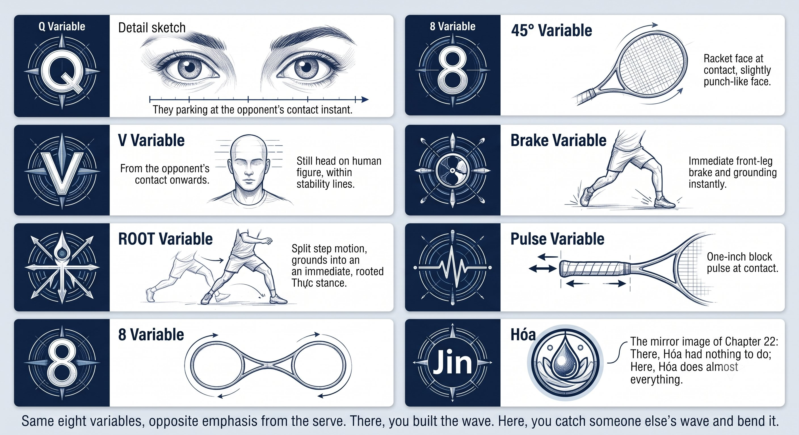
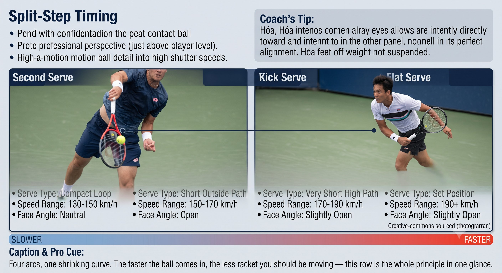
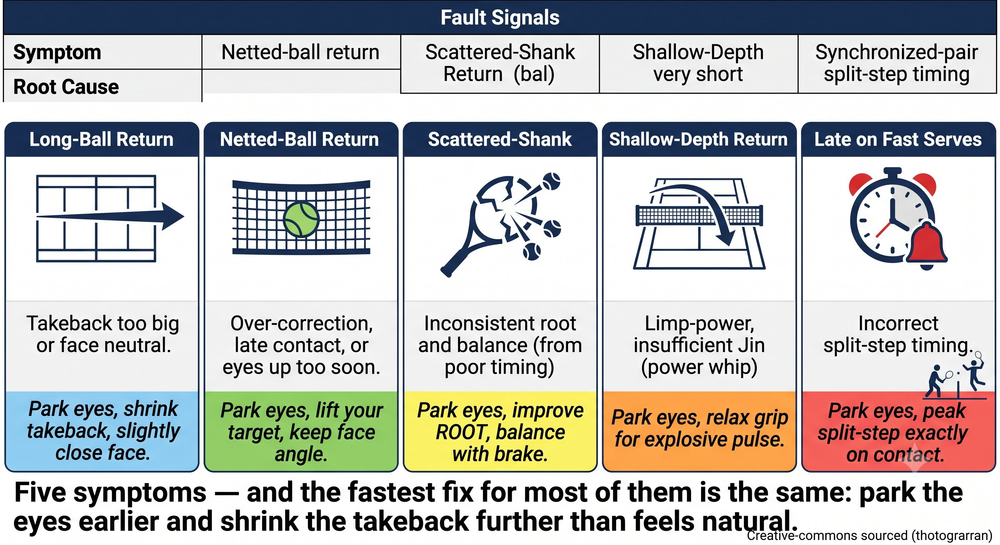

Chapter 23: Return of Serve
(English version of Chapter 23 in the United Tennis Handbook)
CHAPTER 23

Figure 1
RETURN OF SERVE
The Reactive Art
No time to think. A short takeback, Hua Jin, block and redirect. Quiet Eye is everything.
The Return Is Not a Groundstroke
Return is the only shot where you have zero control over the incoming ball. You have to react, not act. Short takeback, Hua Jin, block and redirect.
— Henry Pham
Here are the key differences from a groundstroke:
Figure 23.3: A groundstroke gives you 800 ms and 50 km/h. A return gives you 400 ms and 200 km/h. The arc isn't a luxury — it's physically impossible at return speeds.

Figure 2
RULE: Return means borrowing pace. Short takeback. A firm face. Hua Jin — absorb and redirect.
The Return Q-V-ROOT-8-45-Impulse Map
Split-Step Timing: the Critical Moment
– The split step lands as the opponent contacts the ball — not before, not after.
– In the air, you're a double Hư. Landing is instant Thực on the correct leg.
– Land late and you're late. Land early and you lose elastic energy.
– Quiet Eye onset happens at the opponent's contact. Your eyes park at your own contact zone the instant they hit.
Coach's Tip
Film your split step at 240 frames per second. Frame zero is the opponent's contact. You should be at peak height right then. Landing is your first move. If you're still rising at the opponent's contact, you're late.
Figure 23.1: Same eight variables, opposite emphasis from the serve. There, you built the wave. Here, you catch someone else's wave and bend it.

Figure 3
Takeback: None to Short
Figure 23.4: Three positions, three mindsets. Deep = neutralize. On the line = pressure. Inside = attack. The takeback, target, and risk all shift with your feet.

Figure 4
PRINCIPLE: The faster the serve, the shorter the takeback. You're redirecting, not generating.
Figure 23.2: The faster the serve, the shorter the takeback. A 220 km/h flat serve gets zero takeback — just turn and set the face. A 120 km/h second serve gets a short, compact loop. The arc shrinks as speed rises.

Figure 5
Hua Jin on Return: Absorb and Redirect
– Hua Jin means you don't add force — you transform the opponent's pace.
– The wrist stays firm (4 to 5 out of 10) from the start. A loose wrist on a fast serve means the face wobbles, which means a shank.
– Contact stays in front. Late contact means you're fighting the pace instead of transforming it.
– Angle the face to the target. Let the ball rebound. No swing is needed on anything over 200 km/h.
Return Strategy by Court Position
Fault Signals
Figure 23.5: Five symptoms — and most trace back to just two root causes: eyes moving before contact, or a takeback that didn't shrink for the serve speed.
Drills
1. Split-step timing: your partner serves. Call out "contact" at the opponent's contact and "land" at your own landing. 20 reps.
2. No takeback: your partner hits fast flat serves. You turn, set the face, and freeze the racket. Just block. Feel the Hóa Kình. 20 reps.
3. Eyes only: return with your eyes only on the contact zone. Your partner calls "ball" the moment you peek. 20 reps.
4. The one-inch pulse: a wall drill. Stand one meter from a wall and volley or block with a one-inch pulse. Feel the brake, then the pulse.
OPPONENT'S CONTACT. EYES PARK. SPLIT LANDS. FACE SETS. ONE-INCH PULSE.
The Return Checklist
– Split step lands at the opponent's contact.
– Eyes jump to your contact zone the instant the opponent hits.
– Takeback: none to short. Faster serve, shorter takeback.
– Face: firm from the start, 4 to 5 out of 10 on the wrist, angled to the target.
– Contact: in front. Let the ball rebound. No swing.
– Brake: the front leg stops hard, a one-inch pulse.
– If you shank, your eyes moved. If long, the face was open or late. If into the net, the face was closed or the takeback was too big.
Where This Leads
This chapter integrates Q-V-ROOT-8-45-Impulse-Jin into the return of serve. Chapter 24 covers the volley and overhead. Chapter 25 covers the slice, the drop shot, and the lob.